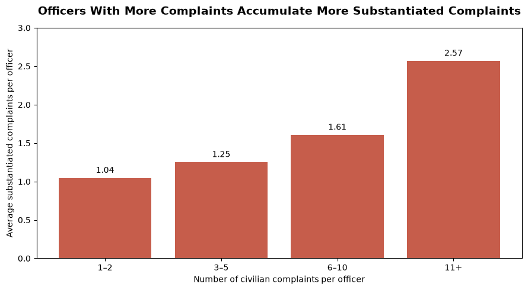
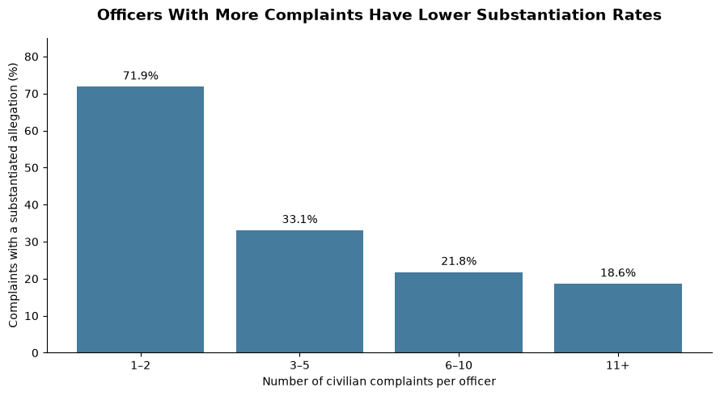

Proposition: More complaints against an NYPD officer indicate more substantiated misconduct records.
FOR the Proposition

Design Decisions and Rationale:
- Grouping by officer and complaint volume (Score: 1.5). Firstly, we transformed the data by grouping records by officer and counting their unique complaints. A complaint was considered substantiated if it had at least one substantiated allegation against that officer. We then grouped officers into categories of 1-2, 3-5, 6-10, and 11+ complaints. This makes the overall trend easier to visualize, although it can ignore differences between individual officers. For example, an officer with only 11 complaints is grouped with someone who has much more. We thought about using individual complaint counts, but believed using categories would make the overall comparison stronger as it would be easier to follow.
- Using average substantiated complaints (Score: 1). We used the average number of substantiated complaints within each category to make comparisons easier. If we instead used the total number, categories with more officers could have more substantiated complaints simply because of their size. Through using averages, we account for group size and focus on the number per officer. A limitation however is that averages do not account for officers that may have served for longer.
- Using absolute counts (Score: -1.5). We used the average number of substantiated complaints instead of the percentage of complaints that were substantiated. This helps support our claim and emphasizes that officers with more complaints have more substantiated complaints. However, percentages tell a different story and actually decrease as complaint volume increases. Using counts could lead viewers to believe that officers with more complaints are more likely to have each individual complaint substantiated, although we specifically do not show that probability.
AGAINST the Proposition

Design Decisions and Rationale:
- Calculating the percentage within each group (Score: 1.5). We divided the number of substantiated complaints by the total number of complaints in each category and multiplied by 100. Each complaint is counted once for each officer involved, even if it contains several allegations against that officer. This makes the comparison about complaints rather than individual allegations. We thought about averaging each officer's percentage, but chose to give each complaint against an officer the same weight instead. This implies officers with more complaints contribute more to their group's rate.
- Arranging by complaint volume (Score: 2). We arranged the bars from fewest to most complaints to help draw attention to the decline in substantiation rates. Through labelling the percentages and showing the downward trend, we make it easier for viewers to recognize that officers with more complaints have a smaller percentage substantiated. We also thought about arranging the categories by substantiation rate instead, but chose complaint volume because it creates an intuitive order viewers can recognize.
- Using substantiation percentage instead of absolute count (Score: -1.5). By focusing on the percentage of complaints that were substantiated and emphasizing the downward trend, we help argue against our original claim. However, this may lead viewers to believe that officers with more complaints have fewer substantiated complaints overall. In reality, those officers still have more substantiated complaints on average. Although percentages account for different complaint volumes, they shift attention away from the total number. Furthermore, a lower percentage does not directly disprove the original claim about the number of records.
- Using the same groups as visualization 1 (Score: 2). We used the same categories of 1-2, 3-5, 6-10, and 11+ complaints as the first visualization to allow for easier comparison. Through keeping the categories and bar widths constant, the difference between the two trends can be seen much more clearly. Although using different categories could have helped emphasize the negative trend, the consistency makes the comparison easier to understand.
Final Reflection
When creating the visualization that is for our claim, we found it trivial to show that officers with more complaints also had more substantiated complaints. Through grouping officers based on their complaint counts and using averages, an upward trend appeared which was reflected in the bar plot. However, focusing on the absolute counts rather than percentages can be misleading and bias the viewer. More specifically, through using absolute counts we leave out the proportion of complaints that were substantiated. We kept the same complaint groups in both visualizations to make it easier to see how changing the measure changes the argument.
For the visualization that counters our proposition, we found it a bit more difficult and had to transform the data slightly more due to the inherent trends within it. Nonetheless, we found it surprising that officers with more total complaints had lower substantiation rates (although they had higher average numbers of substantiated complaints). A lower substantiation rate does not directly disprove our original claim because the total number of substantiated complaints can still be higher. Additionally, the dataset only includes officers with at least one substantiated allegation, so we cannot generalize further.
Through this we found that ethical analysis and visualization is really about summarizing the data with minimal bias. Furthermore, there is a line between "acceptable" persuasion and "misleading" persuasion. More specifically, when data is manipulated in such a way that the user's first intuition miscontextualizes the data, we believe that is "misleading" persuasion. Whereas "acceptable" persuasion may emphasize certain patterns but not the inherent findings of the data. For us, this means making clear what is being measured and which officers are included so viewers can understand the limits of the claim.